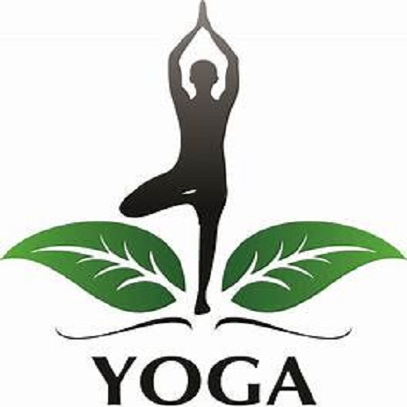YOGA
Yoga takes you in to the present moment.The only place where life exists
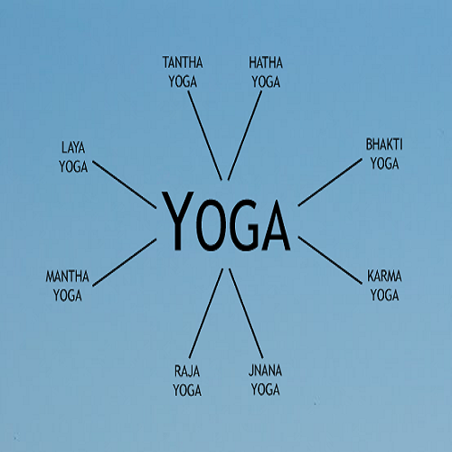
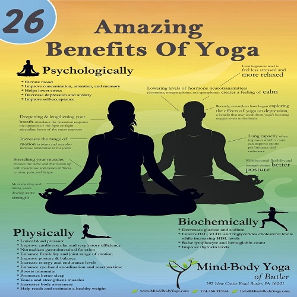
Bakthi Yoga
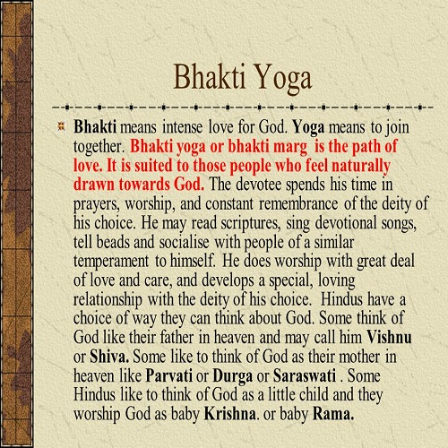A simple definition of Bhakti Yoga floating around is “the yoga of devotion”. It is the practice of having a personal relationship with the Supreme Absolute (or God, the Beloved, the True Self, the Universe, Higher Power, the Big Cheese, Spirit, the One Love, etc).
Hatha Yoga
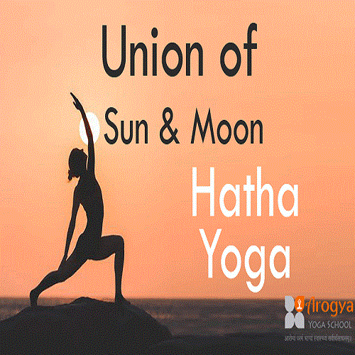Hatha yoga is a branch of yoga that emphasizes physical exercises to master the body along with mind as well as exercises to withdraw it from external objects.
Jnana Yoga
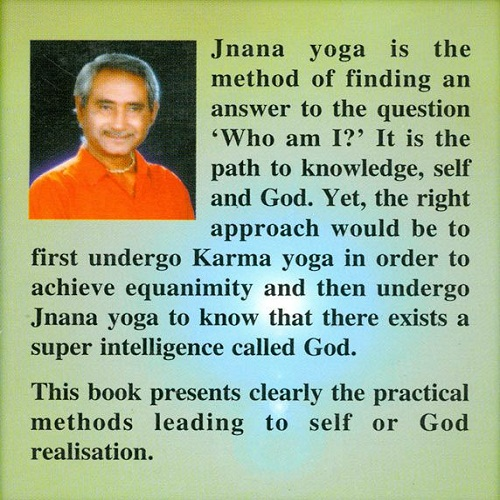Jnana yoga is one of the main paths of yoga that a practitioner can follow on the path to self-realization. It is considered to be the most direct, but also the most difficult path to find absolute truth.
Karma Yoga
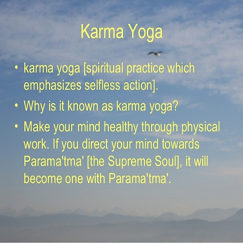Karma yoga is one of the main paths of yoga that a practitioner can follow. The name comes from the Sanskrit term meaning “action” or “deed.” Therefore, it is the path of action, or selfless service towards others.
Kundalini Yoga
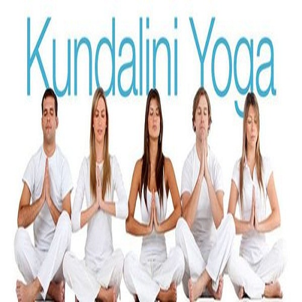The primary aim of Kundalini yoga is to awaken the kundalini energy, which lies coiled, serpent-like, at the base of the spine. In Kundalini yoga, practitioners use breathing exercises, physical postures, chanting and meditation to unlock this energy.
Raja Yoga
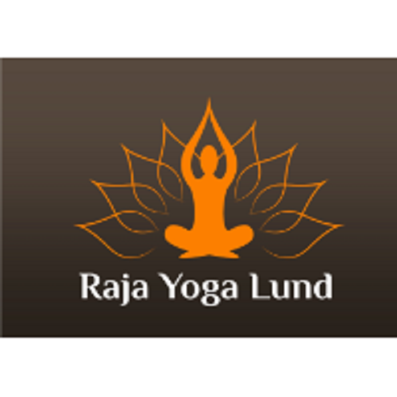Raja yoga is more popularly known as Ashtanga yoga, or the "eightfold path" that leads to spiritual liberation. Ancient Sanskrit texts describe Raja yoga as being the ultimate goal of yoga practice, rather than the physical and mental exercises involved.
Tantric Yoga
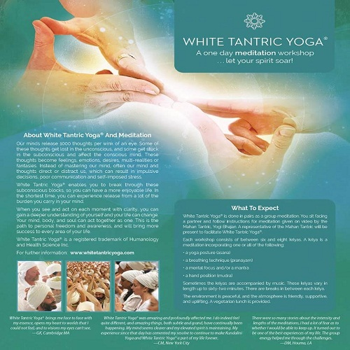Tantra yoga is a type of yoga that employs various rituals to study the universe through the human microcosm. From the Sanskrit “leading principle” or “woven together,” tantra yoga seeks to balance - not renounce - human instincts in an attempt to reach enlightenment.
mantra Yoga
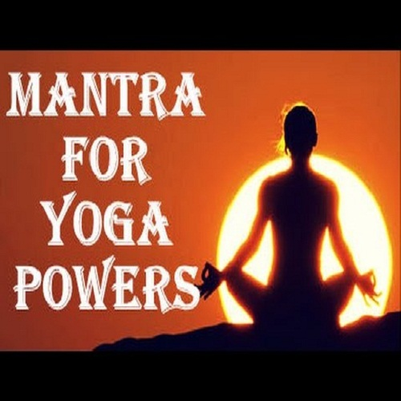Mantra yoga is a type of yoga that uses mantras to awaken the Self and deepen the meditative aspects of a physical yoga practice. Mantra yoga is an exact science that is meant to engage the mind through focusing on sound, duration and number of repetitions
laya Yoga
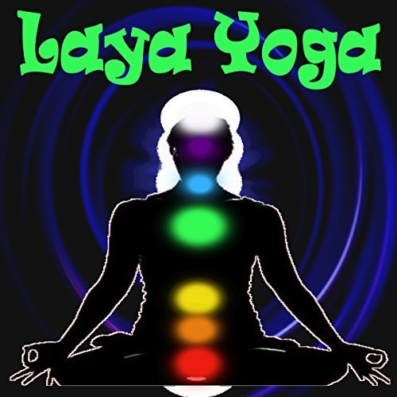Laya yoga is a yoga form in which dissolution of self and merging with the Supreme Consciousness are achieved. Laya is a Sanskrit term meaning "dissolve." Laya yoga leads to the state of samadhi, which is the highest unification with the Divine.